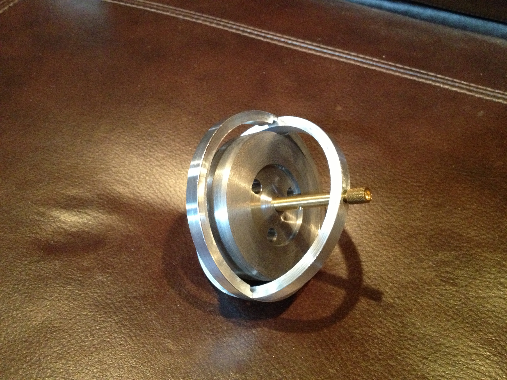

This gyroscope was based on one seen at N.A.M.E.S. this year. The biggest challenge in making a functional gyroscope is ensuring that the wheel spins freely with little vertical movement.
This project was started with a 3.5" OD aluminum pipe section that was 5" long with a 0.200" thick wall. This was placed in the 3-jaw chuck and aligned with the dial gauge. It was faced, bored and cleaned up outside. The pipe was reversed in the chuck, realigned, faced, and bored. It was then cut very slowly with a parting tool on center to provide 2 rings: 0.300" and 0.288" in width. Softened the internal edges with a half-round file and the external edges with a flat file.
Best cutting was done with two clamps holding the ring between an extra plate and the angle plate while cutting from left to right.
The ring to be used as the vertical ring was clamped vertically against the angle plate and first, drilled with a center drill, and then up to a #29 drill bit. This hole was tapped 8-32. The ring was rolled 180° and the drilling/tapping was repeated. The ring was then turned 90° and using a 1/4" end mill was slotted to a depth of 0.100". This slot was opened up on each side 0.025" giving a total width of 0.300". Again the ring was rotated 180° and the slotting repeated.
The second ring was held in the 3-jaw chuck attached to the bed of the mill. The end mill was aligned with the T-slot. The outside of the ring was cut 0.180" to either side of center to a depth of 0.100". This was repeated on the opposite side.
The flywheel was cut from a 2 3/4" X 11/16" steel round. This blank was held in the 3-jaw chuck, faced and the edge cleaned up with the HSS insert tool. The part was reversed in the chuck and the cutting was repeated. A groove was cut from 0.25" off center to 0.75" from center. Again the part was reversed in the chuck and the groove was cut on the opposite as well. The center was drilled up to an I drill and then tapped 5/16-24. The lathe head was then turned 30° for chamfering both outer edges. The 3-jaw chuck holding the flywheel was placed on the milling table and center drilled in the middle of the groove. The hole was opened sequentially up to a G drill bit. The wheel was rotated 120° and the drilling repeated and repeated again after a further 120° rotation.
The shaft was made next from a 6" length of 5/16" hex. This was clamped in the 3-jaw chuck , faced and center drilled. Using a tailstock half-center the HSS insert tool was used to reduce the diameter to 0.25" for 1.3". For some reason the thread cutting die was unable to cut the threads on the 5/16" diameter portion, so this was reduced to 0.27" and threads were cut with the lathe (24 tpi). The threads were cut to a depth of 0.030" and gave a good fit in the flywheel. The other side of the threads was also reduced to 0.25". Both ends were cut to give the final length. 60° holes were redrilled in both ends. Finally, this shaft was held in the fingerplate and cross drilled first with a center drill for the countersink and then through with a #50 drill bit.
Two end screws were made to hold the center shaft to the vertical ring. Two pieces of 0.25 round brass were cut to 0.45" long. A short length of each was turned to 0.164" and threaded 8-32 with a die. A taper was turned on the end to about 59°. The head of the 'bottom' screw was rounded for balancing and the head of the top screw was countersunk in case it was to be balanced on a point.
Assembly proceeded smoothly except for snapping the two rings together. This was difficult as the fit was so tight. The screws holding the shaft in place need to be adjusted frequently during use as they will wander a bit. I did not want to glue them in place as locating them precisely for minimal friction and minimal vertical movement was difficult.
